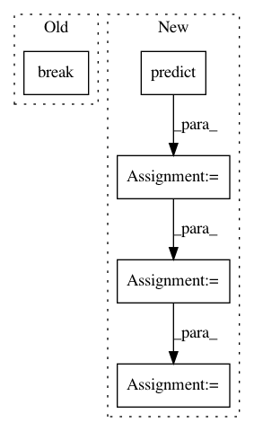

bba1901f835525551dde9ec1537d041abc88d293,deslib/static/oracle.py,Oracle,predict,#Oracle#Any#Any#,77
Before Change
if predicted == y[sample_index]:
predicted = int(predicted)
predicted_labels[sample_index] = predicted
break
predicted_labels[sample_index] = predicted
return self.classes_.take(predicted_labels)
After Change
"".format(self.n_features_, X.shape[1]))
y = self.enc_.transform(y)
preds = [clf.predict(X[:, self.estimator_features_[idx]])
for idx, clf in enumerate(self.pool_classifiers_)]
preds = np.asarray(preds).T
hit_miss = np.asarray(preds) == y.reshape(-1, 1)
idx_sel_classifier = hit_miss.argmax(axis=1)
predicted_labels = preds[np.arange(preds.shape[0]), idx_sel_classifier]
return self.classes_.take(predicted_labels.astype(int))
In pattern: SUPERPATTERN
Frequency: 3
Non-data size: 5
Instances
Project Name: scikit-learn-contrib/DESlib
Commit Name: bba1901f835525551dde9ec1537d041abc88d293
Time: 2021-04-08
Author: rafaelmenelau@gmail.com
File Name: deslib/static/oracle.py
Class Name: Oracle
Method Name: predict
Project Name: IBM/adversarial-robustness-toolbox
Commit Name: 1a398e735d36cc8b344fa7d2bce159ee1f3ef4c2
Time: 2019-05-27
Author: M.N.Tran@ibm.com
File Name: art/attacks/boundary.py
Class Name: BoundaryAttack
Method Name: _attack
Project Name: yahoo/TensorFlowOnSpark
Commit Name: 981e4266d4ea816b08a762193bd52f40cd1a3242
Time: 2019-08-07
Author: leewyang@verizonmedia.com
File Name: examples/mnist/keras/mnist_inference.py
Class Name:
Method Name: inference